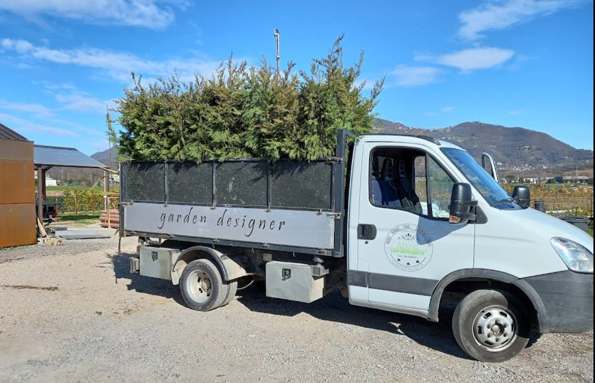

VERDELOGICO
Dal primo progetto alla cura quotidiana, ci prendiamo cura del verde e di tutto ciò che lo completa.
Diamo forma a giardini e aree verdi studiando piante, spazi, materiali e proporzioni per creare un ambiente armonioso e su misura.
Con Siepe Pronta forniamo siepi già formate e coltivate in vivaio. Meno piante, meno attesa, un risultato immediato.
Progettiamo e installiamo impianti di irrigazione efficienti, studiati per mantenere il verde sano riducendo sprechi e interventi manuali.
Dalla manutenzione ordinaria alla potatura di grandi alberi, interveniamo per mantenere piante e aree verdi sane, ordinate e sicure.
Seguiamo il tuo giardino durante tutto l'anno con interventi ricorrenti e personalizzati, perché un verde bello ha bisogno di essere curato nel tempo.
Completiamo il giardino con pavimentazioni da esterno e soluzioni capaci di integrare verde, architettura e vivibilità.
Realizziamo soluzioni frangisole per vivere gli spazi esterni con maggiore comfort, protezione e privacy.
Interventi specifici per rendere il tuo spazio esterno più piacevole e godibile durante la stagione calda.

Raccontaci il tuo progetto. Troveremo insieme la soluzione più adatta.
Richiedi un preventivo